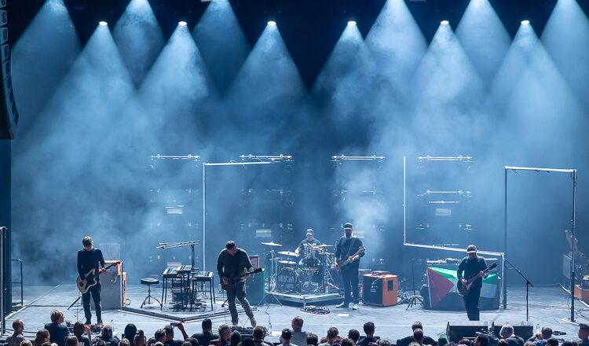
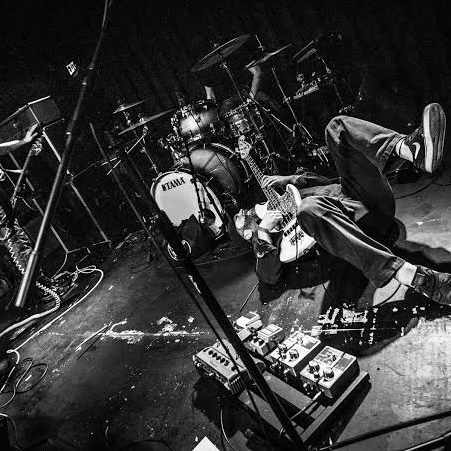
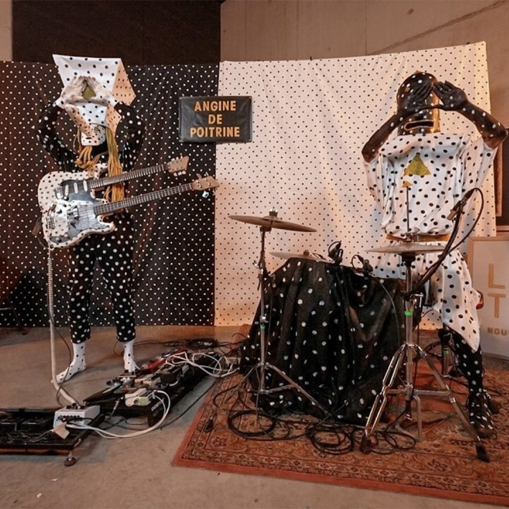

Math Rock
Intricate rhythms, shifting time signatures, and guitar-driven experimentation.
Details
Math rock often plays with unusual meters and unexpected changes while keeping a strong sense of rhythm.
Discover music that breaks the rules. Explore unusual rhythms, experimental sounds, and independent artists.


Intricate rhythms, shifting time signatures, and guitar-driven experimentation.
Rock music that challenges familiar structures and explores unexpected sounds.
Instrumental soundscapes that build atmosphere through texture and dynamics.

Distortion, feedback, and intense textures pushed to the foreground.

Immersive effects, layered instruments, and adventurous arrangements.

Music that explores pitches beyond the usual twelve-note tuning system.